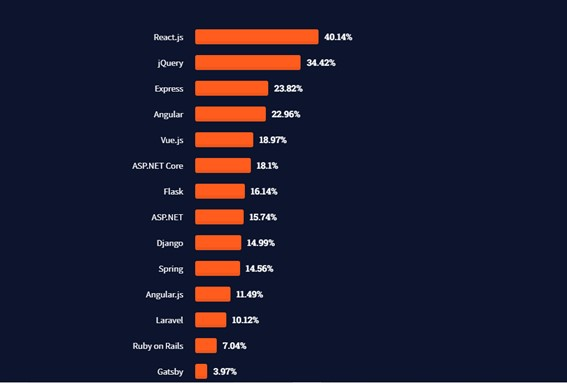

Frameworks: O que são ?
O que é um framework.
Segundo o Noleto (2020) frameworks são uma série de classes e bibliotecas que adicionam um código que tem uma determinada funcionalidade. Normalmente essas funcionalidades, são funcionalidades que a maioria das aplicações tem em comum, e que reunidas em uma só ferramenta, facilitam a vida do desenvolvedor na hora do desenvolvimento. Podemos compará-las com peças prontas que podem ser adicionadas a um carro quebrado, poupando o trabalho de fabricá-las do zero.
Vantagens
Segundo opensoft, dentre as principais vantagens no uso de frameworks, podemos citar:
- Eficiencia: Frameworks poupam tempo e esforço ao entregar funcionalidades prontas pois reduzem o tempo que os desenvolvedores precisam gastar com os códigos.
- Segurança: Conforme o número de pessoas que utilizam o framework vai aumentando, é menos provável dele sofrer com falhas de segurança, uma vez que são identificadas mais rapidamente.
- Apoio técnico: Normalmente os frameworks mais famosos possuem uma boa documentação além de uma grande comunidade disposta a tirar dúvidas a ajudar com qualquer problema
Frameworks mais famosos
Segundo o levantamento realizado pelo site StackOverFlow(2021), os frameworks mais populares são: React.js, jQuery e Express.
React.js
Segundo Andrei (2021), React é uma biblioteca que auxilia a construir interfaces de usuários e grande empresas como Netflix, American Express, Facebook, dentre outras tem utilizado. Ele destaca suas principais vantagens como: Fácil de usar, possui suporte a componentes que podem ser reutilizáveis em Java, melhora o processo de atualização do DOM, amigável ao SEO, entre outros.
jQuery
Segundo Brasil ([entre 2010 e 2021]) jQuery é uma biblioteca JavaScript leve e rápida, que facilita a manipulação de eventos, animações e elementos HTML. Ainda segundo ele, possui como destaque: A leveza da biblioteca, o suporte a diversos navegadores, suporte a CSS3, a existência de diversos plugins.
Express
Segundo o Andrade (2021), Express.js é um framework muito utilizado com node.js no backend das aplicações. Seus destaques são: Possui sistema de rotas completo, possibilita tratamento de exceções, permite integração de vários sistemas de templates, dentre outros.
conlusão
Frameworks são ferramentas essenciais na mão de desenvolvedores pois economizam tempo deixando o trabalho mais eficiente e a aplicação maus segura, portanto, esse trabalho apresentou brevemente os 3 frameworks web mais famosos atualmente que são react.js, jQuery e Express.js e seus pontos fortes.
bibliografia
- NOLETO, Cairo. Framework:: o que é, como ele funciona e para que serve?. Brasil, 13 fev. 2020. Disponível em: https://blog.betrybe.com/framework-de-programacao/o-que-e-framework/. Acesso em: 4 ago. 2021.
- OPENSOFT (Brasil). 6 Vantagens da utilização de frameworks. Brasil, [entre 2010 e 2021]. Disponível em: https://www.opensoft.pt/6-vantagens-da-utilizacao-de-frameworks/. Acesso em: 4 ago. 2021.
- STACKOVERFLOW. Most Popular Technologies. [S. l.], 2021. Disponível em: https://insights.stackoverflow.com/survey/2021#most-popular-technologies-webframe Acesso em: 4 ago. 2021.
- Andrei. O Que é React e Como Funciona?. Brasil, 15 jun. 2021. Disponível em: https://www.hostinger.com.br/tutoriais/o-que-e-react-javascript Acesso em: 4 ago. 2021.
- BRASIL, André. JQuery:: O que é e quais as suas características. Brasil, [entre 2010 e 2021]. Disponível em: https://king.host/wiki/artigo/o-que-e-jquery/ Acesso em: 4 ago. 2021.